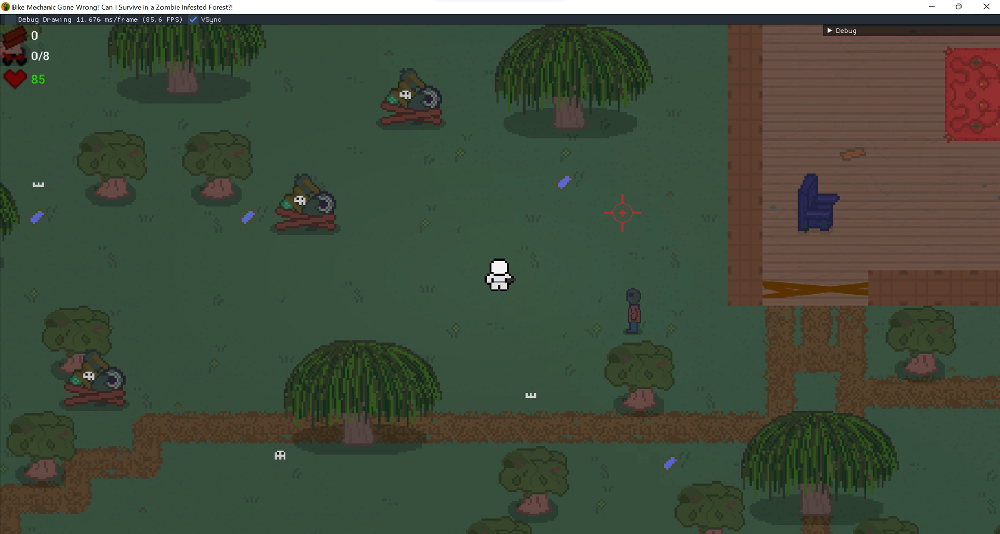
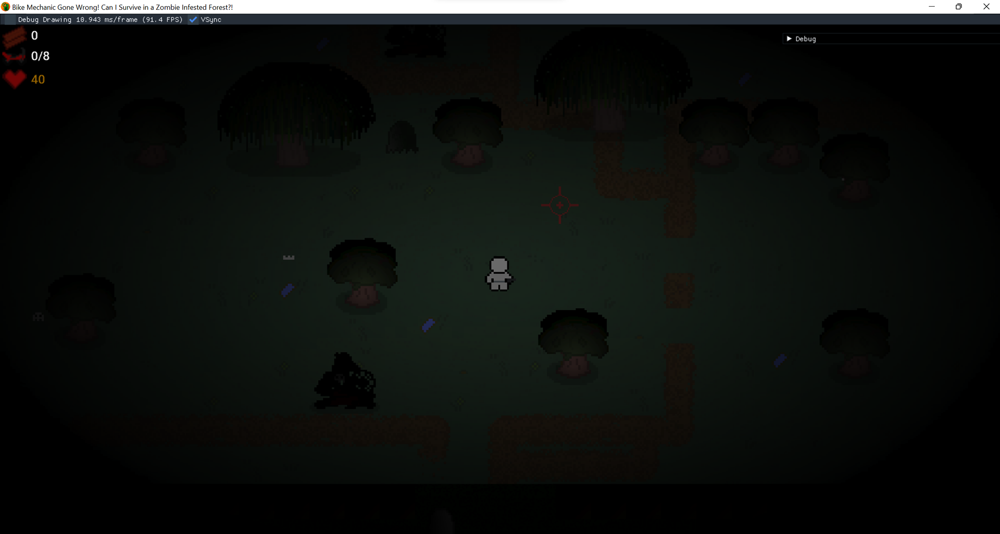
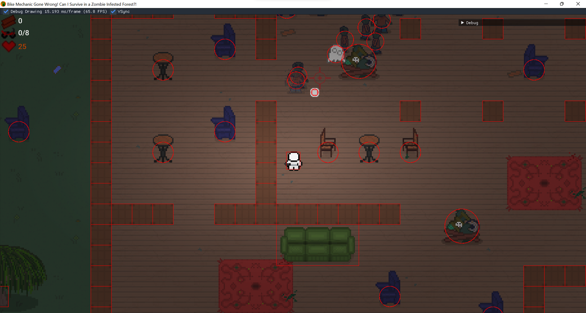
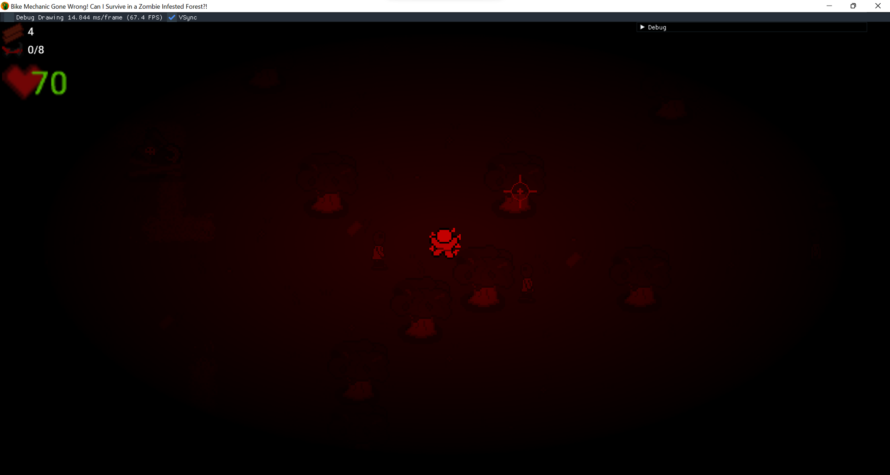
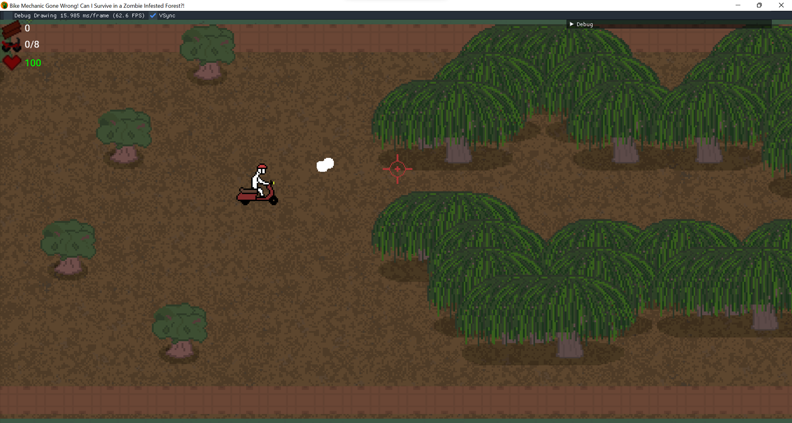
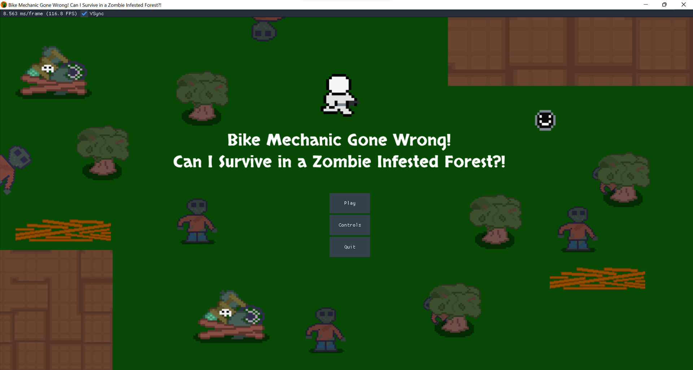

BMGWCISIAZIF (2D Zombie Survival)
Lead Graphics Programmer | C++, Direct3D 11 | Team size: 4
Bike Mechanic Gone Wrong! Can I Survive in a Zombie-Infested Forest?! (BMGWCISIAZIF) is a 2D zombie survival game inspired by Call of Duty Zombies.
Responsibilities
- Built sprite rendering system.
- Implemented screen space technique including day-night cycle (vignette effect), fade-in/out of screen, and red flashing effect for health damage.
- Added HUD, text rendering, and debug drawing of collision shapes using DirectXTK.





